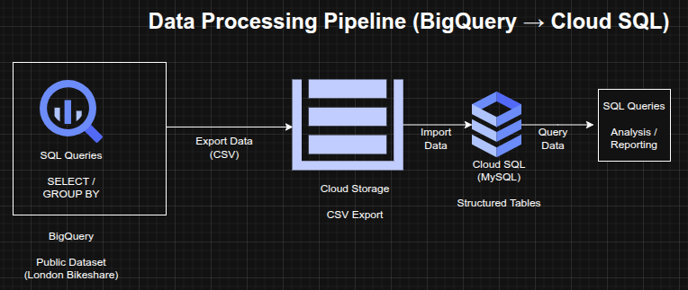

Data Processing and Analytics Pipeline using BigQuery and Cloud SQL (GCP)
Data Processing and Analytics Pipeline using BigQuery and Cloud SQL (GCP)
Timeline: December 2025
Role: Cloud Engineer / Data Engineer
Skills: BigQuery, Cloud SQL, Cloud Storage, SQL, Data Pipelines, Data Transformation, Query Optimization
Project Summary
This project focused on building a data processing and analytics pipeline on Google Cloud Platform using BigQuery and Cloud SQL. The workflow involved querying large public datasets, transforming and exporting structured data, and loading it into a managed relational database for further analysis.
The implementation demonstrated how to move data across multiple cloud services while maintaining structure, enabling both large-scale analytics and transactional querying.
Objectives
- Query and analyze large datasets using BigQuery
- Perform data aggregation using SQL
- Export processed data into CSV format
- Store exported data in Cloud Storage
- Create a Cloud SQL instance and database
- Import structured data into Cloud SQL tables
- Perform SQL-based data manipulation and analysis
Architecture Overview
The architecture consisted of:
- BigQuery for large-scale data querying and aggregation
- Public dataset (London bikeshare) used as the data source
- Cloud Storage bucket used as an intermediate staging layer
- Cloud SQL (MySQL) used as a managed relational database
- SQL queries used to transform, filter, and analyze the data

Implementation & Highlights
1. Data Exploration with BigQuery
- Queried a public dataset containing millions of bikeshare records
- Used SQL commands such as:
- SELECT
- WHERE
- GROUP BY
- COUNT
- ORDER BY
- Extracted insights from large-scale datasets efficiently
2. Data Aggregation and Transformation
- Aggregated trip data based on start and end stations
- Created structured outputs suitable for downstream processing
- Prepared datasets for export and reuse
3. Data Export to Cloud Storage
- Exported query results as CSV files
- Stored the files in a Cloud Storage bucket
- Used Cloud Storage as an intermediate staging layer in the pipeline
4. Cloud SQL Provisioning
- Created a managed MySQL instance using Cloud SQL
- Configured database and tables for structured data ingestion
- Designed schema for imported datasets
5. Data Import into Cloud SQL
- Loaded CSV files into Cloud SQL tables
- Verified data integrity after import
- Enabled structured querying on relational datasets
6. Data Manipulation and Analysis
- Executed SQL operations including:
- DELETE (data cleanup)
- INSERT (data creation)
- UNION (combining datasets)
- Performed relational analysis on processed data
Design Decisions
- Used BigQuery for large-scale analytical queries due to its serverless architecture
- Used Cloud Storage as a staging layer for data transfer
- Used Cloud SQL for structured, relational querying
- Combined analytical and transactional systems for flexibility in data processing
Results & Impact
- Successfully built a multi-stage data processing pipeline on GCP
- Demonstrated ability to:
- query large datasets
- transform structured data
- move data across cloud services
- manage relational databases
- Gained practical experience in data engineering workflows and SQL-based analytics
Tools & Technologies Used
- BigQuery – Data warehouse and analytics engine
- Cloud Storage – Data staging layer
- Cloud SQL (MySQL) – Relational database
- SQL – Querying and data manipulation
- CSV – Data transfer format
Outcome
This project demonstrates the ability to design and implement a cloud-based data pipeline, integrating analytics and relational database services. It highlights practical skills in data transformation, storage, and querying across multiple GCP services, which are essential for cloud engineering and data engineering roles.